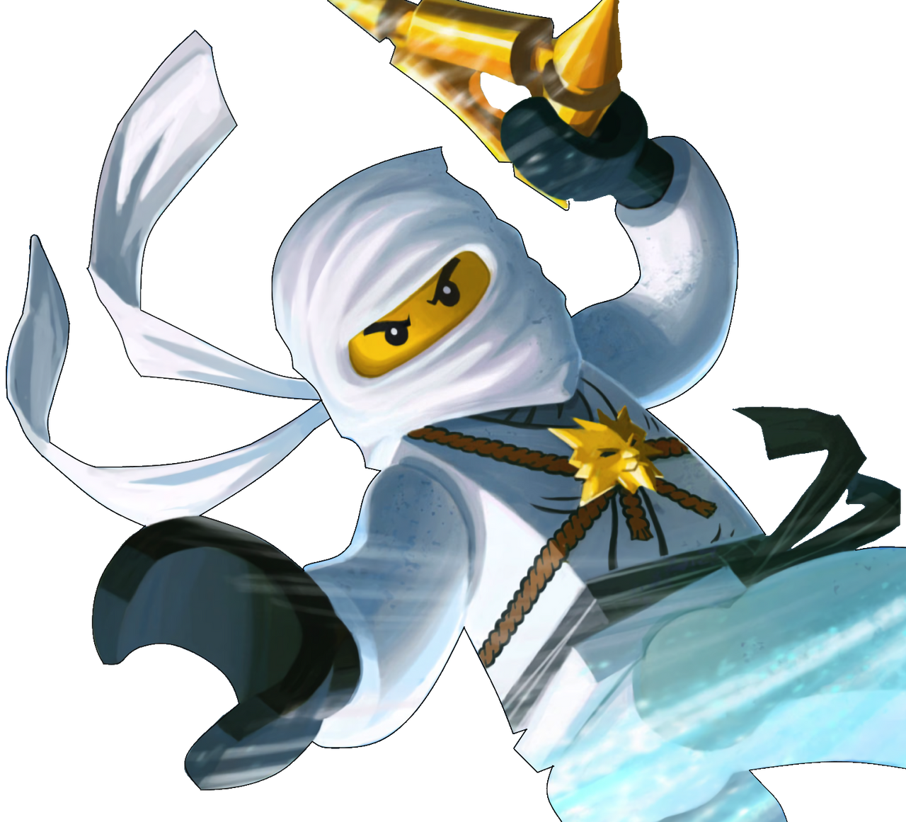
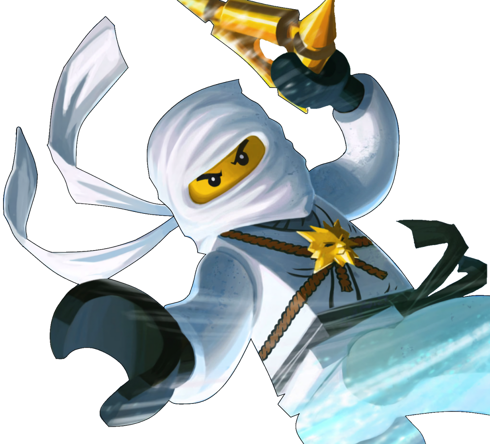

Mestres do spinjutsu.

Fogo
O fogo é um elemento anteriormente usado por Ray e atualmente por Kai . Este elemento dá ao usuário o poder de controlar o fogo, lançar bolas de fogo e criar fogo que explode ao impacto. Kai também pode fazer Spinjitzu de Fogo, Airjitzu e Dragão Ascendente .
Raio
O relâmpago é um elemento anteriormente usado pela mãe de Jay e atualmente por Jay . Este elemento permite ao usuário controlar a eletricidade. Jay também pode fazer Spinjitzu de Relâmpago e Airjitzu.
Gelo
Gelo é um elemento anteriormente usado por Hibernus e atualmente por Zane . Este elemento permite ao usuário controlar o gelo e congelar coisas. Zane também pode usar Spinjitzu de Gelo, Airjitzu e Dragão Ascendente.
Terra
A Terra é um elemento anteriormente usado por Lilly e atualmente por Cole . Este elemento dá ao usuário o poder de controlar a terra, rochas, minerais, etc. Cole também pode fazer Spinjitzu da Terra , Airjitzu e Explosão de Spinjitzu .
Poder
Energia é um elemento usado por Lloyd. Não possui um nome oficial, mas é comumente referido como Energia (embora também tenha sido chamado de Vida ou Poder). Este elemento concede ao usuário o poder de controlar energia, que se manifesta como um misterioso poder verde, uma combinação dos elementos originais do ninja.

 



Dificudades na execução da atividade para revisar dps
Uso do hover, After e Before, posicionamento dos elementos, posicionamento da imagem em elemento.